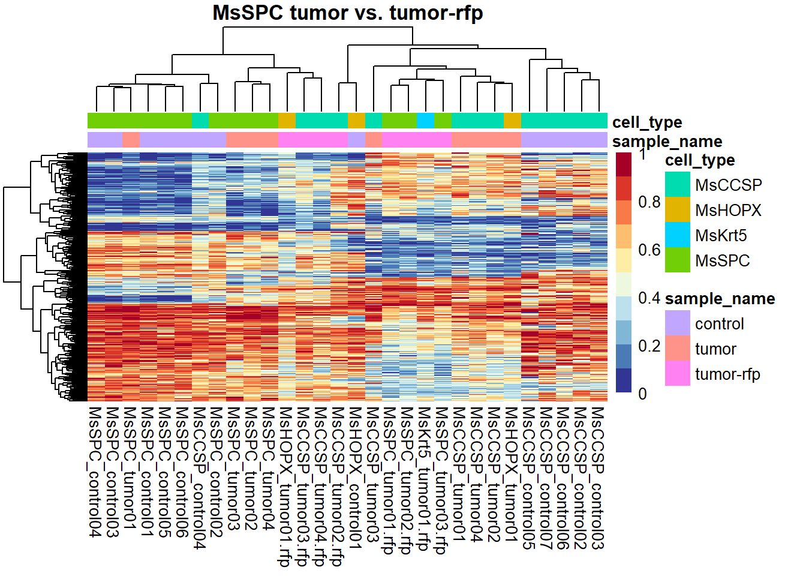

Heatmaps of DMRs
Reka Toth
2019-10_02
Last updated: 2020-03-12
Checks: 7 0
Knit directory: CoO_Lung_Cancer/
This reproducible R Markdown analysis was created with workflowr (version 1.6.0). The Checks tab describes the reproducibility checks that were applied when the results were created. The Past versions tab lists the development history.
Great! Since the R Markdown file has been committed to the Git repository, you know the exact version of the code that produced these results.
Great job! The global environment was empty. Objects defined in the global environment can affect the analysis in your R Markdown file in unknown ways. For reproduciblity it’s best to always run the code in an empty environment.
The command set.seed(20191010) was run prior to running the code in the R Markdown file. Setting a seed ensures that any results that rely on randomness, e.g. subsampling or permutations, are reproducible.
Great job! Recording the operating system, R version, and package versions is critical for reproducibility.
Nice! There were no cached chunks for this analysis, so you can be confident that you successfully produced the results during this run.
Great job! Using relative paths to the files within your workflowr project makes it easier to run your code on other machines.
Great! You are using Git for version control. Tracking code development and connecting the code version to the results is critical for reproducibility. The version displayed above was the version of the Git repository at the time these results were generated.
Note that you need to be careful to ensure that all relevant files for the analysis have been committed to Git prior to generating the results (you can use wflow_publish or wflow_git_commit). workflowr only checks the R Markdown file, but you know if there are other scripts or data files that it depends on. Below is the status of the Git repository when the results were generated:
Ignored files:
Ignored: .Rhistory
Ignored: .Rproj.user/
Ignored: analysis/.Rhistory
Ignored: data/DML_results_MsCCSP_MsSPC_comparison.RDS
Ignored: data/DML_results_MsCCSP_MsSPC_control_comparison.RDS
Ignored: data/DML_results_MsCCSP_tumor_control_comparison.RDS
Ignored: data/DML_results_MsCCSP_tumor_rfp_control_comparison.RDS
Ignored: data/DML_results_MsCCSP_tumor_rfp_tumor_comparison.RDS
Ignored: data/DML_results_MsSPC_tumor_control_comparison.RDS
Ignored: data/DML_results_MsSPC_tumor_rfp_control_comparison.RDS
Ignored: data/DML_results_MsSPC_tumor_rfp_tumor_comparison.RDS
Ignored: data/DMLs_noMsCCSP_control01_smoothed.RDS
Ignored: data/DMRs_noMsCCSP_control01_smoothed.RDS
Ignored: data/QC_data.RData
Ignored: data/annotation_table_TAGWGBS_02_10.txt
Ignored: data/genotypes_all.txt
Ignored: data/methrix_object.RDS
Ignored: data/no_snps_methrix.RDS
Ignored: data/promoter_beds/
Ignored: data/snp_data_5_strains_14_10.RDS
Ignored: data/snp_ranges.bed
Ignored: data/snp_ranges.bedGraph
Untracked files:
Untracked: analysis/01_read_in_MethylDackel.Rmd
Untracked: analysis/02-DMR_calling.Rmd
Untracked: analysis/DMR_enrichment.Rmd
Untracked: analysis/DMR_report.Rmd
Untracked: analysis/DMR_report_selected.Rmd
Untracked: analysis/Figures.Rmd
Untracked: analysis/LMC_annotation.Rmd
Untracked: analysis/LMC_promoters.Rmd
Untracked: analysis/MeDeCom.Rmd
Untracked: analysis/MeDeCom_MsCCSP.Rmd
Untracked: analysis/MeDeCom_all.Rmd
Untracked: analysis/MeDeCom_all_no_MsCCSP_c4.Rmd
Untracked: analysis/MeDeCom_controls.Rmd
Untracked: analysis/MeDeCom_controls_no_MsCCSP_c4.Rmd
Untracked: analysis/PCA_plots.Rmd
Untracked: analysis/PCA_plots_selected.Rmd
Untracked: analysis/QC_report.Rmd
Untracked: analysis/candiate_region_plot.Rmd
Untracked: analysis/candiate_region_plot_histogram.Rmd
Untracked: analysis/dmr_calling_methrix_17_07_noMsCCSP_control01_smoothed.R
Untracked: analysis/enhancers.rmd
Untracked: analysis/prepare_homer.Rmd
Untracked: analysis/prepare_medecom_regions.Rmd
Untracked: analysis/prepare_promoters_tca.Rmd
Untracked: code/Figure_1.R
Untracked: code/Figure_2.R
Untracked: code/Figure_3.R
Untracked: data/.gitignore
Untracked: data/DML_results_MsCCSP_MsSPC_tumor_comparison.RDS
Untracked: data/MeDeCom_MCCSP_SPC_prepared_filt.rds
Untracked: data/MsCCPS_MsSPC_enhancers.rds
Untracked: data/MsCCPS_MsSPC_promoters.rds
Untracked: data/all_samples_enhancers.rds
Untracked: data/all_samples_promoters.rds
Untracked: data/annotated_regions/
Untracked: data/annotation_table_TAGWGBS_17_2.txt
Untracked: data/annotation_table_TAGWGBS_24_2.txt
Untracked: data/annotation_table_TAGWGBS_31_1.txt
Untracked: data/bivalent_enhancers_plot.pdf
Untracked: data/candidate_genes.txt
Untracked: data/candidate_promoter_methylation.RDS
Untracked: data/candidate_promoter_methylation_smoothed.RDS
Untracked: data/candidate_promoter_methylation_smoothed_methrix.RDS
Untracked: data/candidate_promoter_smoothed_bsseq.RDS
Untracked: data/comparisons.RDS
Untracked: data/enc_epd_enhc_gene_mm10.txt
Untracked: data/enc_epd_enhc_gene_mm10.txt.gz
Untracked: data/enc_epd_enhc_gene_mm10_int.txt
Untracked: data/enhancer_beds/
Untracked: data/enhancers/
Untracked: data/labels.RDS
Untracked: data/medecom/
Untracked: data/medecom_MsCCSP.RDS
Untracked: data/medecom_MsCCSP_MsSPC_enhancers.RDS
Untracked: data/medecom_MsCCSP_MsSPC_promoters.RDS
Untracked: data/medecom_MsCCSP_SPC_promoters.RDS
Untracked: data/medecom_MsCCSP_promoters.RDS
Untracked: data/medecom_all.RDS
Untracked: data/medecom_all_no_MsCCSP_c4.RDS
Untracked: data/medecom_controls.RDS
Untracked: data/medecom_random_sites.RDS
Untracked: data/medecom_random_sites_all.RDS
Untracked: data/mm9ToMm10.over.chain
Untracked: data/mm9ToMm10.over.chain.gz
Untracked: data/most_variable_in_controls.rds
Untracked: data/no_snpsXY_methrix.RDS
Untracked: data/promoter_bsseq_smoothed.RDS
Untracked: data/promoter_methylation.RDS
Untracked: data/promoter_methylation_smoothed.RDS
Untracked: data/promoter_methylation_smoothed_methrix.RDS
Untracked: data/random_sites.rds
Untracked: data/random_sites_all.rds
Untracked: data/removed_sites_MeDeCom.RDS
Untracked: data/removed_sites_MsCCSP_MeDeCom.RDS
Untracked: data/removed_sites_all_MeDeCom.RDS
Untracked: data/removed_sites_control_MeDeCom.RDS
Untracked: data/selected_sites_MeDeCom.RDS
Untracked: data/selected_sites_MsCCSP_MeDeCom.RDS
Untracked: data/selected_sites_all_MeDeCom.RDS
Untracked: data/selected_sites_control_MeDeCom.RDS
Untracked: data/sequencing_annotation_table.csv
Untracked: desktop.ini
Untracked: output/QC_report.html
Untracked: output/QC_report/MC_per_chr.tsv
Untracked: output/QC_report/MsCCSP_control01_density.tsv.gz
Untracked: output/QC_report/MsCCSP_control02_density.tsv.gz
Untracked: output/QC_report/MsCCSP_control03_density.tsv.gz
Untracked: output/QC_report/MsCCSP_control04_density.tsv.gz
Untracked: output/QC_report/MsCCSP_control05_density.tsv.gz
Untracked: output/QC_report/MsCCSP_control06_density.tsv.gz
Untracked: output/QC_report/MsCCSP_control07_density.tsv.gz
Untracked: output/QC_report/MsCCSP_tumor01_density.tsv.gz
Untracked: output/QC_report/MsCCSP_tumor02.rfp_density.tsv.gz
Untracked: output/QC_report/MsCCSP_tumor02_density.tsv.gz
Untracked: output/QC_report/MsCCSP_tumor03.rfp_density.tsv.gz
Untracked: output/QC_report/MsCCSP_tumor03_density.tsv.gz
Untracked: output/QC_report/MsCCSP_tumor04.rfp_density.tsv.gz
Untracked: output/QC_report/MsCCSP_tumor04_density.tsv.gz
Untracked: output/QC_report/MsHOPX_control01_density.tsv.gz
Untracked: output/QC_report/MsHOPX_tumor01.rfp_density.tsv.gz
Untracked: output/QC_report/MsHOPX_tumor01_density.tsv.gz
Untracked: output/QC_report/MsKrt5_tumor01.rfp_density.tsv.gz
Untracked: output/QC_report/MsSPC_control01_density.tsv.gz
Untracked: output/QC_report/MsSPC_control02_density.tsv.gz
Untracked: output/QC_report/MsSPC_control03_density.tsv.gz
Untracked: output/QC_report/MsSPC_control04_density.tsv.gz
Untracked: output/QC_report/MsSPC_control05_density.tsv.gz
Untracked: output/QC_report/MsSPC_control06_density.tsv.gz
Untracked: output/QC_report/MsSPC_tumor01.rfp_density.tsv.gz
Untracked: output/QC_report/MsSPC_tumor01_density.tsv.gz
Untracked: output/QC_report/MsSPC_tumor02.rfp_density.tsv.gz
Untracked: output/QC_report/MsSPC_tumor02_density.tsv.gz
Untracked: output/QC_report/MsSPC_tumor03.rfp_density.tsv.gz
Untracked: output/QC_report/MsSPC_tumor03_density.tsv.gz
Untracked: output/QC_report/MsSPC_tumor04_density.tsv.gz
Untracked: output/QC_report/contig_lens.tsv
Untracked: output/QC_report/global_MC_per_samp.tsv
Untracked: output/QC_report/n_covered_by_all_samples.tsv
Untracked: output/QC_report/n_covered_per_chr.tsv
Untracked: output/QC_report_deprecated/
Untracked: output/QC_report_no_SNPs/MC_per_chr.tsv
Untracked: output/QC_report_no_SNPs/MsCCSP_control01_density.tsv.gz
Untracked: output/QC_report_no_SNPs/MsCCSP_control02_density.tsv.gz
Untracked: output/QC_report_no_SNPs/MsCCSP_control03_density.tsv.gz
Untracked: output/QC_report_no_SNPs/MsCCSP_control04_density.tsv.gz
Untracked: output/QC_report_no_SNPs/MsCCSP_control05_density.tsv.gz
Untracked: output/QC_report_no_SNPs/MsCCSP_control06_density.tsv.gz
Untracked: output/QC_report_no_SNPs/MsCCSP_control07_density.tsv.gz
Untracked: output/QC_report_no_SNPs/MsCCSP_tumor01_density.tsv.gz
Untracked: output/QC_report_no_SNPs/MsCCSP_tumor02.rfp_density.tsv.gz
Untracked: output/QC_report_no_SNPs/MsCCSP_tumor02_density.tsv.gz
Untracked: output/QC_report_no_SNPs/MsCCSP_tumor03.rfp_density.tsv.gz
Untracked: output/QC_report_no_SNPs/MsCCSP_tumor03_density.tsv.gz
Untracked: output/QC_report_no_SNPs/MsCCSP_tumor04.rfp_density.tsv.gz
Untracked: output/QC_report_no_SNPs/MsCCSP_tumor04_density.tsv.gz
Untracked: output/QC_report_no_SNPs/MsHOPX_control01_density.tsv.gz
Untracked: output/QC_report_no_SNPs/MsHOPX_tumor01.rfp_density.tsv.gz
Untracked: output/QC_report_no_SNPs/MsHOPX_tumor01_density.tsv.gz
Untracked: output/QC_report_no_SNPs/MsKrt5_tumor01.rfp_density.tsv.gz
Untracked: output/QC_report_no_SNPs/MsSPC_control01_density.tsv.gz
Untracked: output/QC_report_no_SNPs/MsSPC_control02_density.tsv.gz
Untracked: output/QC_report_no_SNPs/MsSPC_control03_density.tsv.gz
Untracked: output/QC_report_no_SNPs/MsSPC_control04_density.tsv.gz
Untracked: output/QC_report_no_SNPs/MsSPC_control05_density.tsv.gz
Untracked: output/QC_report_no_SNPs/MsSPC_control06_density.tsv.gz
Untracked: output/QC_report_no_SNPs/MsSPC_tumor01.rfp_density.tsv.gz
Untracked: output/QC_report_no_SNPs/MsSPC_tumor01_density.tsv.gz
Untracked: output/QC_report_no_SNPs/MsSPC_tumor02.rfp_density.tsv.gz
Untracked: output/QC_report_no_SNPs/MsSPC_tumor02_density.tsv.gz
Untracked: output/QC_report_no_SNPs/MsSPC_tumor03.rfp_density.tsv.gz
Untracked: output/QC_report_no_SNPs/MsSPC_tumor03_density.tsv.gz
Untracked: output/QC_report_no_SNPs/MsSPC_tumor04_density.tsv.gz
Untracked: output/QC_report_no_SNPs/contig_lens.tsv
Untracked: output/QC_report_no_SNPs/global_MC_per_samp.tsv
Untracked: output/QC_report_no_SNPs/n_covered_by_all_samples.tsv
Untracked: output/QC_report_no_SNPs/n_covered_per_chr.tsv
Untracked: output/QC_report_no_SNPs_deprecated/
Untracked: output/annotated_regions/
Untracked: output/candidate_regions_hist/
Untracked: output/candidate_regions_point/
Untracked: output/homer/
Untracked: output/poised_enhancers_all_heatmap.pdf
Untracked: output/poised_enhancers_controls_heatmap.pdf
Untracked: output/tca_res.RDS
Untracked: output/tca_res_candidate_promoters.RDS
Untracked: output/tca_res_promoter_candidate.RDS
Untracked: public/
Unstaged changes:
Modified: analysis/index.Rmd
Note that any generated files, e.g. HTML, png, CSS, etc., are not included in this status report because it is ok for generated content to have uncommitted changes.
These are the previous versions of the R Markdown and HTML files. If you’ve configured a remote Git repository (see ?wflow_git_remote), click on the hyperlinks in the table below to view them.
| File | Version | Author | Date | Message |
|---|---|---|---|---|
| Rmd | 73ecdb4 | tkike | 2020-03-12 | wflow_publish(files = “analysis/heatmaps.Rmd”) |
library(methrix)
library(data.table)
library(HDF5Array)
library(SummarizedExperiment)
library(annotatr)
library(ggplot2)
library(rtracklayer)
library(limma)
library(knitr)
library(pheatmap)
library(ggsci)Read in methrix dataset
###########libraries and functions#############
if (grepl("Windows", Sys.getenv("OS"))){
PATH ="V:/"} else {
PATH ="/C010-projects/"}
if (grepl("Windows", Sys.getenv("OS"))){
PATH_Y="N:/"} else {
PATH_Y="/C010-datasets/"}
DATA = paste0(PATH, "Reka/33_CoO_lung/CoO_Lung_Cancer/data/")
CODE = paste0(PATH, "Reka/33_CoO_lung/CoO_Lung_Cancer/code/")
RESULT = paste0(PATH, "Reka/33_CoO_lung/CoO_Lung_Cancer/output/")
CALLS = paste0(PATH_Y, "External/2018-10-Sotillo/data/methylDackel/")
#source(paste0(PATH, 'Reka/02-PPP/source/modified_rGreat_anno.R'))
source(file = file.path(CODE, "set_upp_dummy_vars.R"))
Cellpaper <- c("#313695","#4575b4", "#74add1", "#abd9e9","#e0f3f8","#ffffbf","#fee090","#fdae61","#f46d43","#d73027","#a50026")################################################
res <- readRDS(paste0(DATA, "no_snpsXY_methrix.RDS"))
DMRs <- readRDS(file.path(DATA, "DMRs_noMsCCSP_control01_smoothed.RDS"))
comparisons_all <- names(DMRs)
##remove MsCCSP_control01, because of bad QC values
#res <- methrix::subset_methrix(res, samples = rownames(res@colData)[-which(attr(res@colData, "listData")$full_name=="MsCCSP_control01")])
#annotation <- read.delim(file=file.path(DATA, "annotation_table_TAGWGBS_02_10.txt"),stringsAsFactors = F)
comparisons <- readRDS(file = file.path(DATA, "comparisons.RDS"))
res <- set_up_dummy_vars(res, comparisons)Heatmap of DMRs
labels <- readRDS(file.path(DATA, "labels.RDS"))
for (comp in comparisons_all) {
cat('\n')
cat("### Comparisons",
paste0(labels[labels$comparisons == comp, 1], " ",
labels[labels$comparisons == comp, 2], " vs. ",
labels[labels$comparisons == comp, 3]),
"\n")
mat1 <- as.data.frame(methrix::get_region_summary(res, makeGRangesFromDataFrame(DMRs[[comp]][order(abs(DMRs[[comp]]$diff.Methy), decreasing = T)[1:min(nrow(DMRs[[comp]]), 10000)],])))
plot_mat <- mat1[complete.cases(mat1),-(1:4)]
cat("Heatmap with all samples. \n")
pheatmap::pheatmap(plot_mat, annotation_col = as.data.frame(res@colData)[,c("sample_name", "cell_type")], colorRampPalette(Cellpaper, space = "rgb")(10), main = paste0(labels[labels$comparisons == comp, 1], " ",
labels[labels$comparisons == comp, 2], " vs. ",
labels[labels$comparisons == comp, 3]), show_rownames = FALSE)
cat("Heatmap with the involved samples only. \n")
mat1 <- mat1[,rownames(res@colData)[!is.na(res@colData[,comp])]]
plot_mat <- mat1[complete.cases(mat1),]
pheatmap::pheatmap(plot_mat, annotation_col = as.data.frame(res@colData[!is.na(res@colData[,comp]),c("sample_name", "cell_type")]), colorRampPalette(Cellpaper, space = "rgb")(10), main = paste0(labels[labels$comparisons == comp, 1], " ",
labels[labels$comparisons == comp, 2], " vs. ",
labels[labels$comparisons == comp, 3]), show_rownames = FALSE)
}Comparisons MsCCSP control vs. tumor
-Checking for overlaps..-Summarizing by average-Done! Finished in:6.440s elapsed (7.880s cpu)Heatmap with all samples. Heatmap with the involved samples only.
Comparisons MsCCSP control vs. tumor-rfp
-Checking for overlaps..-Summarizing by average-Done! Finished in:5.470s elapsed (7.310s cpu)Heatmap with all samples. Heatmap with the involved samples only.
Comparisons MsCCSP tumor vs. tumor-rfp
-Checking for overlaps..-Summarizing by average-Done! Finished in:5.330s elapsed (7.160s cpu)Heatmap with all samples. Heatmap with the involved samples only.
Comparisons MsCCSP vs. MsSPC
-Checking for overlaps..-Summarizing by average-Done! Finished in:5.160s elapsed (6.700s cpu)Heatmap with all samples.  Heatmap with the involved samples only.
Heatmap with the involved samples only.
Comparisons MsCCSP_control vs. MsSPC_control
-Checking for overlaps..-Summarizing by average-Done! Finished in:5.540s elapsed (7.650s cpu)Heatmap with all samples. Heatmap with the involved samples only.
Comparisons MsSPC control vs. tumor
-Checking for overlaps..-Summarizing by average-Done! Finished in:5.250s elapsed (6.740s cpu)Heatmap with all samples. Heatmap with the involved samples only.
Comparisons MsSPC control vs. tumor-rfp
-Checking for overlaps..-Summarizing by average-Done! Finished in:5.210s elapsed (6.920s cpu)Heatmap with all samples. Heatmap with the involved samples only.
Comparisons MsSPC tumor vs. tumor-rfp
-Checking for overlaps..-Summarizing by average-Done! Finished in:3.970s elapsed (6.420s cpu)Heatmap with all samples. Heatmap with the involved samples only.
Comparisons MsCCSP_tumor vs. MsSPC_tumor
-Checking for overlaps..-Summarizing by average-Done! Finished in:4.160s elapsed (6.470s cpu)Heatmap with all samples. Heatmap with the involved samples only.
Heatmap of slected samples on DMRs
for (comp in comparisons_all) {
cat('\n')
cat("### Comparisons",
paste0(labels[labels$comparisons == comp, 1], " ",
labels[labels$comparisons == comp, 2], " vs. ",
labels[labels$comparisons == comp, 3]),
"\n")
mat1 <- as.data.frame(methrix::get_region_summary(res, makeGRangesFromDataFrame(DMRs[[comp]][order(abs(DMRs[[comp]]$diff.Methy), decreasing = T)[1:min(nrow(DMRs[[comp]]), 10000)],])))
samples_to_include <- rownames(res@colData)[res@colData$cell_type %in% c("MsSPC", "MsCCSP") & res@colData$sample_name %in% c("control", "tumor")]
mat1 <- mat1[,samples_to_include]
plot_mat <- mat1[complete.cases(mat1),]
pheatmap::pheatmap(plot_mat, annotation_col = as.data.frame(res@colData[samples_to_include,c("sample_name", "cell_type")]), colorRampPalette(Cellpaper, space = "rgb")(10), main = paste0(labels[labels$comparisons == comp, 1], " ",
labels[labels$comparisons == comp, 2], " vs. ",
labels[labels$comparisons == comp, 3]), show_rownames = FALSE)
}Comparisons MsCCSP control vs. tumor
-Checking for overlaps..-Summarizing by average-Done! Finished in:5.200s elapsed (6.890s cpu)Comparisons MsCCSP control vs. tumor-rfp
-Checking for overlaps..-Summarizing by average-Done! Finished in:5.590s elapsed (6.630s cpu)### Comparisons MsCCSP tumor vs. tumor-rfp
-Checking for overlaps..-Summarizing by average-Done! Finished in:5.430s elapsed (6.420s cpu)### Comparisons MsCCSP vs. MsSPC
-Checking for overlaps..-Summarizing by average-Done! Finished in:5.230s elapsed (6.530s cpu)### Comparisons MsCCSP_control vs. MsSPC_control
-Checking for overlaps..-Summarizing by average-Done! Finished in:5.020s elapsed (6.890s cpu)### Comparisons MsSPC control vs. tumor
-Checking for overlaps..-Summarizing by average-Done! Finished in:5.640s elapsed (6.810s cpu)### Comparisons MsSPC control vs. tumor-rfp
-Checking for overlaps..-Summarizing by average-Done! Finished in:5.090s elapsed (6.560s cpu)### Comparisons MsSPC tumor vs. tumor-rfp
-Checking for overlaps..-Summarizing by average-Done! Finished in:4.000s elapsed (6.080s cpu)### Comparisons MsCCSP_tumor vs. MsSPC_tumor
-Checking for overlaps..-Summarizing by average-Done! Finished in:4.440s elapsed (6.530s cpu)
sessionInfo()R version 3.6.3 (2020-02-29)
Platform: x86_64-w64-mingw32/x64 (64-bit)
Running under: Windows 10 x64 (build 17763)
Matrix products: default
locale:
[1] LC_COLLATE=English_United States.1252
[2] LC_CTYPE=English_United States.1252
[3] LC_MONETARY=English_United States.1252
[4] LC_NUMERIC=C
[5] LC_TIME=English_United States.1252
attached base packages:
[1] parallel stats4 stats graphics grDevices utils datasets
[8] methods base
other attached packages:
[1] ggsci_2.9 pheatmap_1.0.12
[3] knitr_1.28 limma_3.42.2
[5] rtracklayer_1.46.0 ggplot2_3.2.1
[7] annotatr_1.12.1 HDF5Array_1.14.3
[9] rhdf5_2.30.1 methrix_1.0.05
[11] SummarizedExperiment_1.16.1 DelayedArray_0.12.2
[13] BiocParallel_1.20.1 matrixStats_0.55.0
[15] Biobase_2.46.0 GenomicRanges_1.38.0
[17] GenomeInfoDb_1.22.0 IRanges_2.20.2
[19] S4Vectors_0.24.3 BiocGenerics_0.32.0
[21] data.table_1.12.8 workflowr_1.6.0
loaded via a namespace (and not attached):
[1] bitops_1.0-6 fs_1.3.1
[3] bit64_0.9-7 RColorBrewer_1.1-2
[5] progress_1.2.2 httr_1.4.1
[7] rprojroot_1.3-2 tools_3.6.3
[9] backports_1.1.5 R6_2.4.1
[11] DBI_1.1.0 lazyeval_0.2.2
[13] colorspace_1.4-1 withr_2.1.2
[15] prettyunits_1.1.1 tidyselect_1.0.0
[17] bit_1.1-15.2 curl_4.3
[19] compiler_3.6.3 git2r_0.26.1
[21] scales_1.1.0 readr_1.3.1
[23] askpass_1.1 rappdirs_0.3.1
[25] stringr_1.4.0 digest_0.6.25
[27] Rsamtools_2.2.3 rmarkdown_2.1
[29] XVector_0.26.0 pkgconfig_2.0.3
[31] htmltools_0.4.0 regioneR_1.18.1
[33] dbplyr_1.4.2 fastmap_1.0.1
[35] BSgenome_1.54.0 rlang_0.4.5
[37] RSQLite_2.2.0 shiny_1.4.0
[39] DelayedMatrixStats_1.8.0 farver_2.0.3
[41] dplyr_0.8.4 RCurl_1.98-1.1
[43] magrittr_1.5 GenomeInfoDbData_1.2.2
[45] Matrix_1.2-18 Rcpp_1.0.3
[47] munsell_0.5.0 Rhdf5lib_1.8.0
[49] lifecycle_0.1.0 stringi_1.4.6
[51] whisker_0.4 yaml_2.2.1
[53] zlibbioc_1.32.0 plyr_1.8.5
[55] BiocFileCache_1.10.2 AnnotationHub_2.18.0
[57] grid_3.6.3 blob_1.2.1
[59] promises_1.1.0 crayon_1.3.4
[61] lattice_0.20-38 Biostrings_2.54.0
[63] GenomicFeatures_1.38.2 hms_0.5.3
[65] pillar_1.4.3 rjson_0.2.20
[67] reshape2_1.4.3 biomaRt_2.42.0
[69] XML_3.99-0.3 glue_1.3.1
[71] BiocVersion_3.10.1 evaluate_0.14
[73] BiocManager_1.30.10 vctrs_0.2.3
[75] httpuv_1.5.2 openssl_1.4.1
[77] gtable_0.3.0 purrr_0.3.3
[79] assertthat_0.2.1 xfun_0.12
[81] mime_0.9 xtable_1.8-4
[83] later_1.0.0 tibble_2.1.3
[85] GenomicAlignments_1.22.1 AnnotationDbi_1.48.0
[87] memoise_1.1.0 interactiveDisplayBase_1.24.0